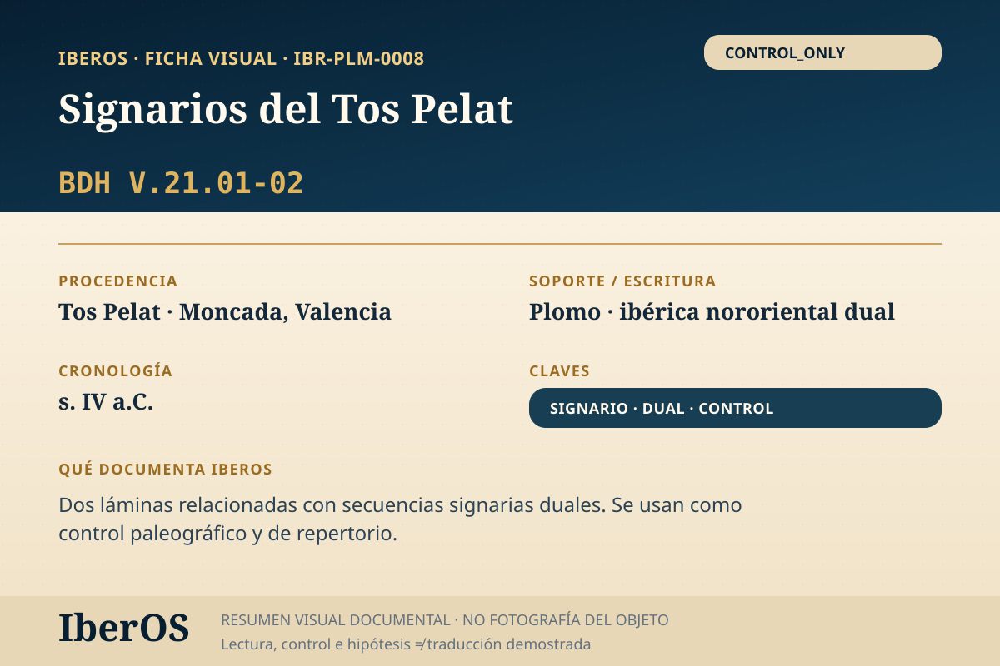

Ficha indexable · IBR-PLM-0008
Signarios del Tos Pelat
Dos láminas relacionadas con secuencias signarias duales; uso paleográfico PA...

Qué documenta IberOS
Dos láminas relacionadas con secuencias signarias duales; uso paleográfico PA...
Control paleográfico / metodológico. No se utiliza como evidencia semántica independiente.
Cautela científica: transliteración, segmentación o semejanza formal no equivalen a una traducción demostrada.
Trazabilidad metodológica
Módulos: PALEO · TRACE · SIGNARY_DETECT · DUAL_LOCK.
Dependencia: TOS_PELAT_SIGNARY_SET.
Entrada: NEEDS_SUBENTRY_SPLIT.
Subentradas documentales
La reconciliación actual confirma dos entradas de V.21.01. La identificación externa de V.21.02 sigue abierta.
| Subentrada IberOS | ID externo | Unidad |
|---|---|---|
IBR-PLM-0008-V21.01-A | I03049 | V.21.01 / A2b1 |
IBR-PLM-0008-V21.01-B | I03050 | V.21.01 / A2b2 |
IBR-PLM-0008-V21.02 | I03052 | V.21.02 / B2 |
Estado: V.21.02 queda identificado a nivel de índice externo como I03052; sigue pendiente el cotejo paleográfico visual. Como control, estas unidades no alimentan inferencias semánticas independientes.
Fuente y bibliografía
Fuente principal: https://doi.org/10.36707/palaeohispanica.v0i11.82
Archivo IberOS: IberOS_CaseStudies_Objeto_IBR-PLM-0008_TosPelat_v1.0.pdf.